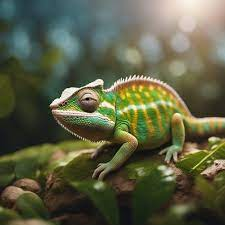

Bem-vindo ao Meu Site de Fotografia
Sou Beth, um fotógrafo apaixonado por capturar momentos únicos e especiais. Meu trabalho abrange desde paisagens naturais até retratos íntimos, sempre buscando a essência em cada imagem.
Galeria de Destaque
